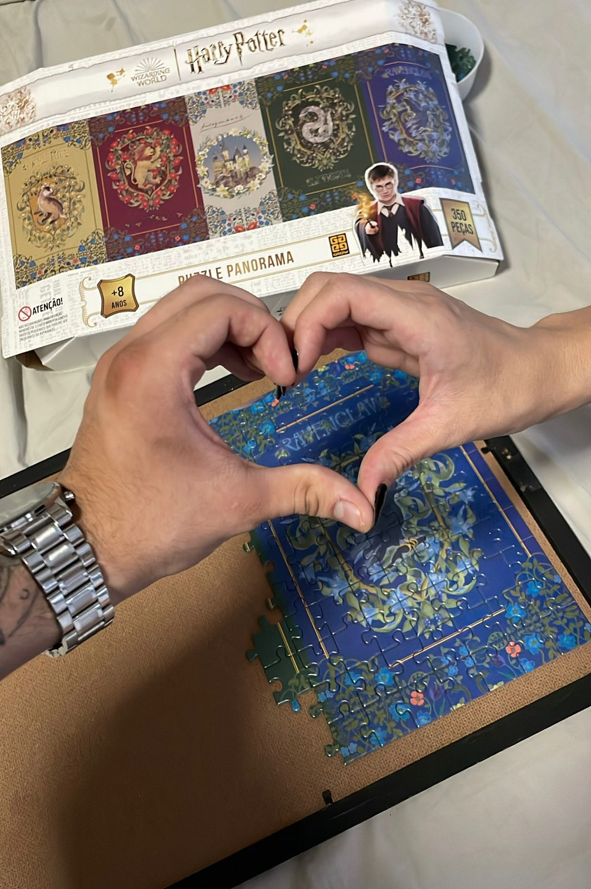
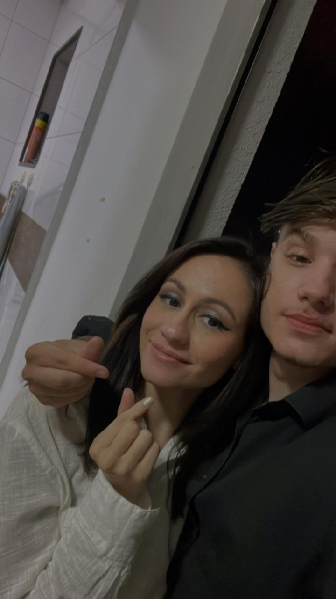
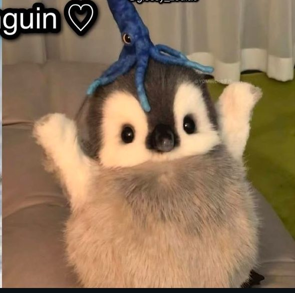
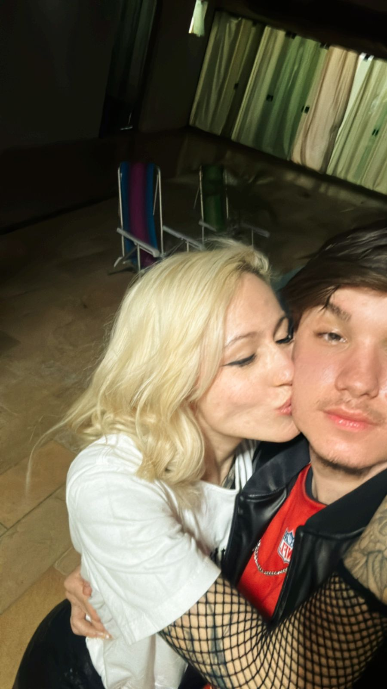
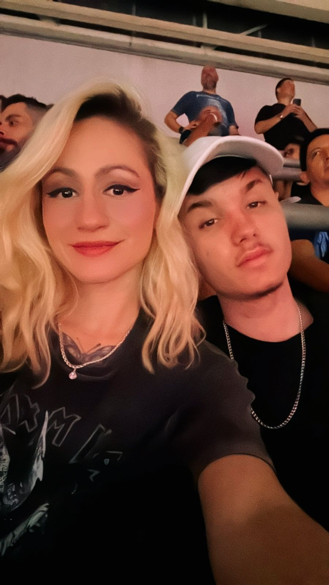
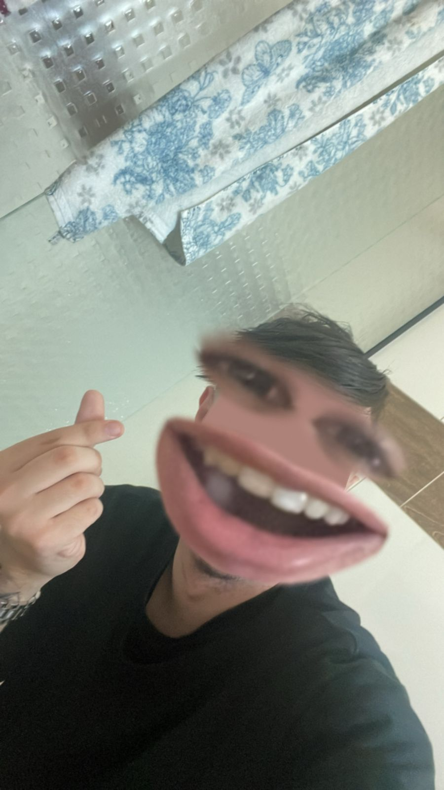
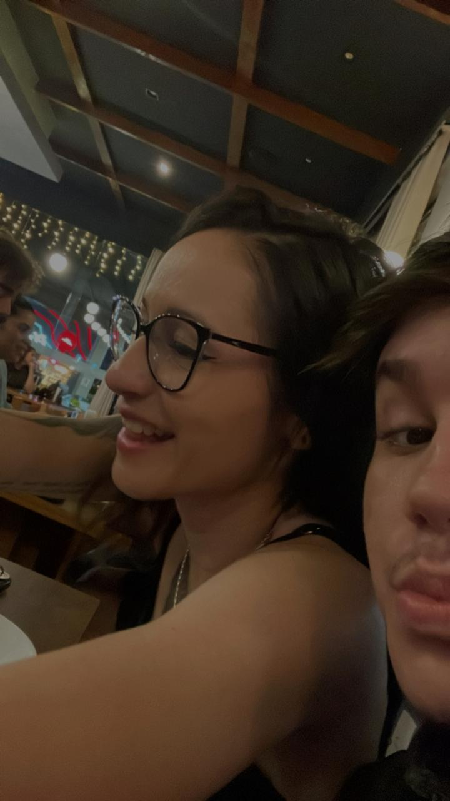

1. Nossos momentos aleatorios Juntos
Os momentos que passamos juntos pra mim é especial. Mesmo nas situações mais simples, eu me divirto muito com você. Quando estou ao seu lado, tudo parece mais leve e a felicidade se torna algo natural, sem esforço. Seu sorriso e sua presença fazem minha alegria e é incrível como qualquer momento é transformado em memórias que toda vez q eu lembro aquecem o coração. Cada risada e cada olhar compartilham uma cumplicidade única, além do fato de compartilharmos do mesmo neuronio, sou feliz quando estou com você
2. Nosso carinho com o outro
O carinho que temos quando estamos juntos é algo indescritível. É no toque, no olhar e nas palavras que expressamos o quanto nos importamos. Não é preciso de muito para que nossa conexão, tivemos sempre uma conexão absurda e uma facilidade de cuidar um do outro. O abraço, a atenção, os pequenos detalhes que fazem o dia mais leve e mais feliz ao seu lado. Cada momento de carinho com você é uma lembrança do quanto nossa presença é especial para o outro. E eu amo isso
3. Meu jeito bobo com você
Meu jeito bobo com você é uma das coisas que mais me faz sorrir. Sabe quando a gente não precisa se preocupar em ser sério o tempo todo e pode apenas ser quem realmente somos? Eu adoro isso! Com você, posso ser espontâneo, fazer piadas bobas e agir de maneira descomplicada, sem medo de parecer infantil. Esses momentos, cheios de risadas e brincadeiras, torna tudo mais leve e divertido. É como se o mundo lá fora pudesse esperar, porque ao seu lado, eu só quero me perder, me esquecer dos problemas e é onde eu posso me sentir eu mesmo.
4. O quanto a gente combina e você me completa
A maneira como a gente se encaixa é algo que me surpreende. Parece que fomos feitos um para o outro, como se nossas diferenças se complementassem de uma forma única. Nossos pensamentos, nossos gostos, até as pequenas peculiaridades, tudo se alinha de uma maneira que me faz sentir que estou ao lado da pessoa que realmente me entende. Você me completa de um jeito que nunca imaginei ser possível. E é essa combinação entre nós que torna cada momento com você ainda mais especial, pois sei que estamos juntos por uma razão muito além do simples acaso.
5. O Quanto você se preocupa e cuida de mim
O cuidado que você tem por mim faz eu me sentir uma criança novamente, onde não preciso me preocupar com nada, e que tenho alguem lá por mim. Desde os gestos mais simples até as atitudes mais grandiosas, você sempre se dedica a me fazer feliz e cuidar de mim da melhor forma. Seu carinho vai além do óbvio, você se envolve genuinamente no meu bem-estar. As vezes me sinto mal acostumado com tanto cuidado que você tem por mim, mas eu amo isso em você
6. Nossa intimidade
Nossa intimidade é um espaço onde eu posso ser totalmente eu, sem máscaras, sem precisar me preocupar em parecer algo que não sou. Isso me faz tão bem, porque me sinto livre para mostrar quem eu realmente sou, com todos os meus defeitos e qualidades. E o melhor de tudo é que, ao ser verdadeiro, sinto que consigo te fazer ainda mais feliz. Nossa conexão vai além das palavras, é algo que nos permite crescer juntos, me entendendo e te fazendo sentir o quanto você é importante para mim. Esse vínculo me dá forças e, ao mesmo tempo, me faz querer fazer você sorrir mais a cada dia.
7. Sua companhia e todas nossas "Aventuras"
Sua companhia é, sem dúvida, a melhor parte de qualquer coisa que a gente faça. Não importa o destino ou o que estamos fazendo, estar ao seu lado transforma qualquer experiência em algo único e inesquecível. Cada momento juntos, seja em algo planejado ou em uma situação inesperada, se torna uma "aventura" cheia de diversão e amor para mim. Sua presença torna tudo mais emocionante, e é com você que eu quero explorar o mundo, criar memórias e viver essas pequenas grandes aventuras que só nós dois entendemos. Juntos, cada passo se torna uma nova história para contar, e isso me faz sentir grato por ter você na minha vida.